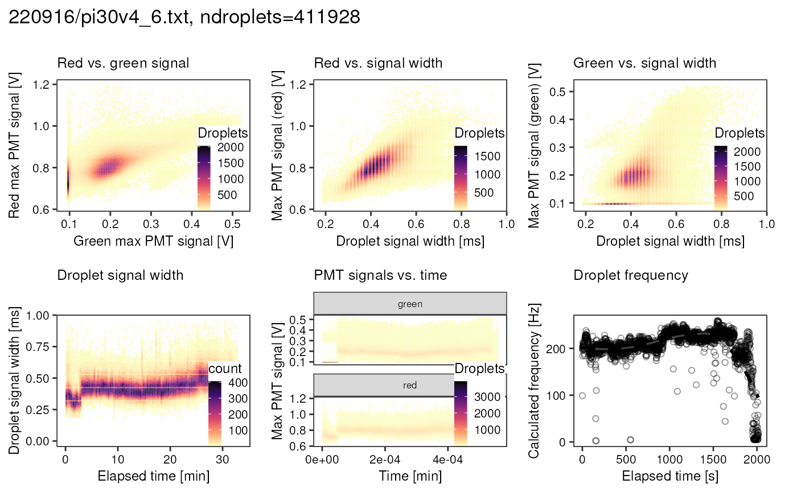
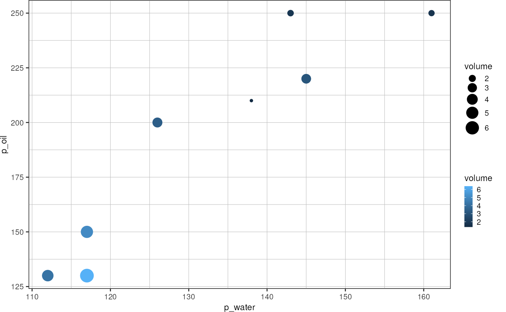
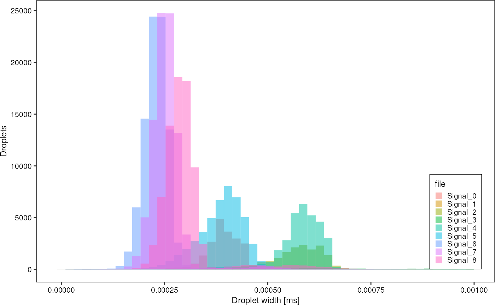
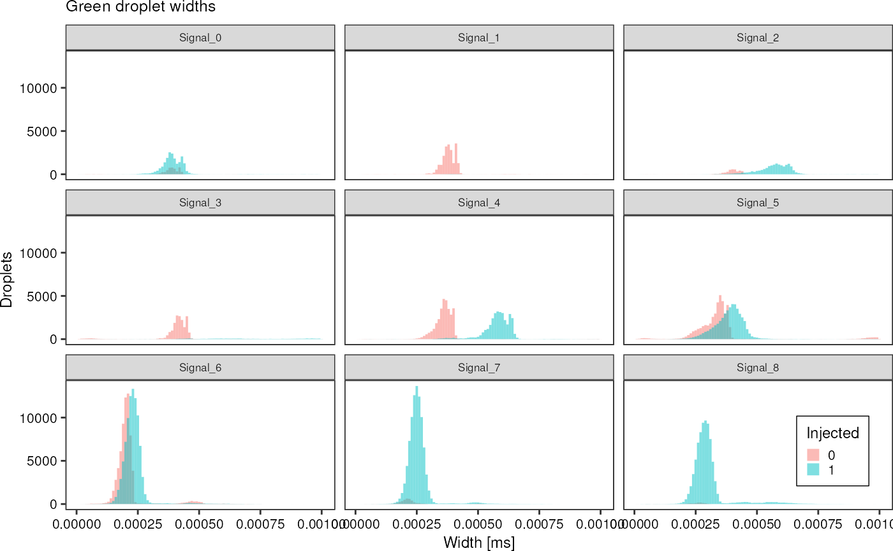
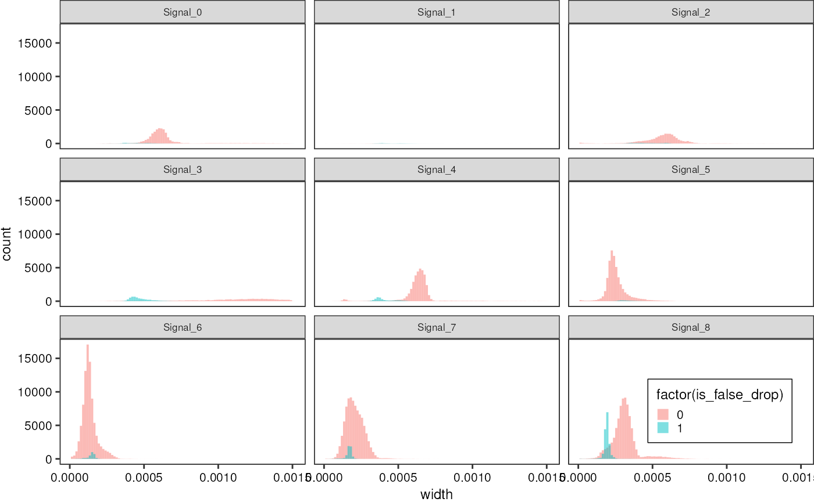
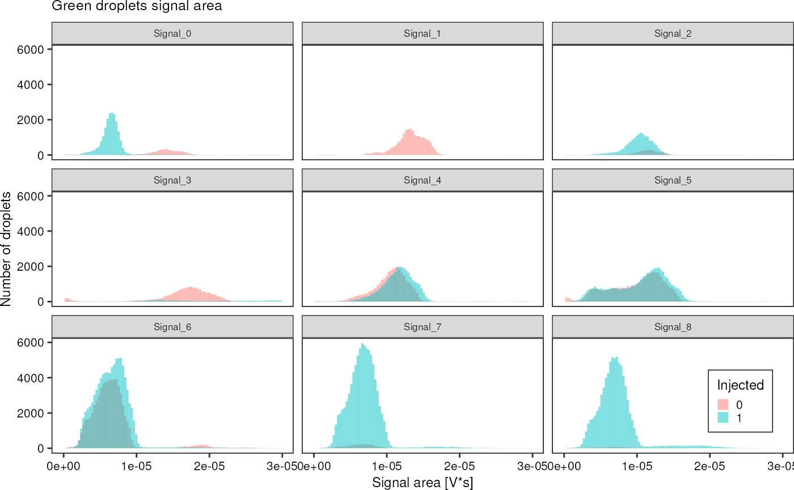

FADS Analysis
fads_analysis.Rmd
library(picoinjector)
library(dplyr)
#>
#> Attaching package: 'dplyr'
#> The following objects are masked from 'package:stats':
#>
#> filter, lag
#> The following objects are masked from 'package:base':
#>
#> intersect, setdiff, setequal, union
library(readr)
library(ggplot2)TSV file
Using the LabVIEW software, a TSV file can be recorded during an experiment, where every row corresponds to a droplet that is recognized by the sorter. For a droplet flowing across the focus spot to be recognized, the signal captured by the PMT has to exceed a defined threshold in terms of amplitude and duration. This way, droplets can be distinguished from the background signal.
fads <- fads_read_tsv("data/fads/220916/pi30v4_0.txt")
fads
#> # A tibble: 43,950 × 6
#> time blue green red width spacing
#> <dbl> <dbl> <dbl> <dbl> <dbl> <dbl>
#> 1 3631845945. 0 0.222 1.13 3.18 9.09
#> 2 3631846023. 0 0.218 0.943 2.62 13.3
#> 3 3631846070. 0 0.218 0.872 2.29 7.3
#> 4 3631846129. 0 0.238 0.963 2.90 10.1
#> 5 3631846181. 0 0.237 0.914 2.64 8.05
#> 6 3631846254. 0 0.234 0.935 2.85 12.7
#> 7 3631846297. 0 0.228 0.941 2.80 6.32
#> 8 3631846383. 0 0.229 0.902 2.68 15.5
#> 9 3631846415. 0 0.227 0.883 2.52 4.04
#> 10 3631846502. 0 0.227 1.10 3.30 15.8
#> # … with 43,940 more rowsThis function allows to plot the red against the green signal:
fads %>%
fads_remove_outliers() %>%
fads_plot_red_green()
Same plot, but with hexagonal glyphs:

Lets look at the signal width as well:
fads %>%
# fads_remove_outliers() %>%
fads_plot_width()
Plot width vs. time:
fads %>%
# fads_remove_outliers() %>%
fads_plot_width_time()
Plot signal vs. time:
fads %>%
fads_remove_outliers() %>%
fads_plot_signal_time()
Plot droplet frequency over time:
fads_plot_frequency(fads)
Over the course of this project, I collected many FADS tsv files. From each of them, I want to generate a comprehensive report containing all the plots shown above with a single function call. Probably the best way to this, is combining all the ggplot objects into one plot using patchwork:
p <- fads_generate_report("data/fads/220916/pi30v4_6.txt")
p
Do this for all .txt files that were generate by the
FADS setup:
fads_reports_for_all("~/nyancat_tsv", "output/fads_data_exploration/")Picoinjecting cells experiment (2022-12-16)
Convert droplet occupancy into volume
occupancy_to_picoliter <- function(occupancy, knownConcentration = 1e8) {
return(occupancy/knownConcentration*1e9)
}
occupancies <- readr::read_tsv("data/fads/221216/occupancy_redmph_0_0085.txt", col_names = c("file", "occupancy"), show_col_types = F)
flowrates <- readr::read_tsv("data/fads/221216/flowrates.txt", show_col_types = F)
flowrates %>%
dplyr::left_join(occupancies, by = "file") %>%
dplyr::mutate("volume" = occupancy_to_picoliter(occupancy)) %>%
dplyr::filter(!file %in% paste0("Signal_", 4)) %>%
ggplot(aes(x = p_water, y = p_oil)) +
# geom_text(aes(label = file), position = position_jitter(height = 4, width = 0)) +
geom_point(aes(size = volume, color = volume)) +
theme_pretty()
Picoinjecting Atto488 into resorufin droplets (2022-11-17)
Combine all available data into one tibble:
greenAll <- fads_read_all("data/fads/221117/", "_barcode.txt$")
redAll <- fads_read_all("data/fads/221117/", "_injected.txt$")
greenAll %>%
dplyr::filter(injected == 1,
width < 0.001) %>%
ggplot(aes(x = width, fill = file)) +
geom_histogram(bins = 50, alpha = 0.5, position = "identity") +
theme_pretty_thesis() +
labs(x = "Droplet width [ms]",
y = "Droplets",
fille = "File")
greenAll %>%
dplyr::filter(width < 0.001) %>%
ggplot(aes(x = width, fill = factor(injected))) +
geom_histogram(bins =100, alpha = 0.5, position = "identity") +
theme_pretty_thesis() +
facet_wrap(~ file) +
labs(title = "Green droplet widths",
x = "Width [ms]",
y = "Droplets",
fill = "Injected")
False droplets can be distinguished by their width:
redAll %>%
dplyr::filter(width < 0.0015) %>%
ggplot(aes(x = width, fill = factor(is_false_drop))) +
geom_histogram(bins =100, alpha = 0.5, position = "identity") +
theme_pretty_thesis() +
facet_wrap(~ file)
Another interesting observation that confirms the quantitative accuracy of laser-based droplet analysis is the fact that while injected droplets increase in size and thus generate a wider signal in the PMT, the signal power, i.e. the area under a signal peak stays the same. Therefore, the signal arriving in a PMT can be interpreted as a direct measure of the amount of dye inside a droplet.
greenAll %>%
dplyr::filter(area < 3e-5) %>%
ggplot(aes(x = area, fill = factor(injected))) +
geom_histogram(bins =100, alpha = 0.5, position = "identity") +
theme_pretty_thesis() +
facet_wrap(~ file) +
labs(title = "Green droplets signal area",
x = "Signal area [V*s]",
y = "Number of droplets",
fill = "Injected")
Calculate some averages:
greenAll %>%
dplyr::group_by(file) %>%
dplyr::summarise("width_mean" = mean(width),
"width_sd" = sd(width),
"area_mean" = mean(area),
"area_sd" = sd(area),
"injected_mean" = mean(injected))
#> # A tibble: 9 × 6
#> file width_mean width_sd area_mean area_sd injected_mean
#> <chr> <dbl> <dbl> <dbl> <dbl> <dbl>
#> 1 Signal_0 0.000431 0.000194 0.00000939 0.00000839 0.795
#> 2 Signal_1 0.000414 0.000171 0.0000151 0.00000990 0.0145
#> 3 Signal_2 0.000597 0.000231 0.0000128 0.00000870 0.799
#> 4 Signal_3 0.000647 0.000412 0.0000231 0.0000150 0.331
#> 5 Signal_4 0.000496 0.000181 0.0000121 0.00000613 0.511
#> 6 Signal_5 0.000383 0.000145 0.0000114 0.00000788 0.520
#> 7 Signal_6 0.000225 0.0000576 0.00000660 0.00000303 0.578
#> 8 Signal_7 0.000255 0.0000518 0.00000687 0.00000270 0.960
#> 9 Signal_8 0.000301 0.0000744 0.00000724 0.00000316 0.986
greenAll %>%
dplyr::group_by(file, injected) %>%
dplyr::summarise("width_mean" = mean(width),
"width_sd" = sd(width),
"area_mean" = mean(area),
"area_sd" = sd(area),
"injected_mean" = mean(injected))
#> `summarise()` has grouped output by 'file'. You can override using the
#> `.groups` argument.
#> # A tibble: 18 × 7
#> # Groups: file [9]
#> file injected width_mean width_sd area_mean area_sd injected_mean
#> <chr> <dbl> <dbl> <dbl> <dbl> <dbl> <dbl>
#> 1 Signal_0 0 0.000431 0.000209 0.0000165 0.0000124 0
#> 2 Signal_0 1 0.000431 0.000190 0.00000756 0.00000569 1
#> 3 Signal_1 0 0.000407 0.000150 0.0000148 0.00000886 0
#> 4 Signal_1 1 0.000880 0.000517 0.0000402 0.0000282 1
#> 5 Signal_2 0 0.000493 0.000273 0.0000153 0.0000119 0
#> 6 Signal_2 1 0.000623 0.000211 0.0000122 0.00000755 1
#> 7 Signal_3 0 0.000428 0.000158 0.0000179 0.0000103 0
#> 8 Signal_3 1 0.00109 0.000412 0.0000334 0.0000174 1
#> 9 Signal_4 0 0.000380 0.000129 0.0000114 0.00000610 0
#> 10 Signal_4 1 0.000607 0.000153 0.0000127 0.00000608 1
#> 11 Signal_5 0 0.000367 0.000175 0.0000120 0.00000937 0
#> 12 Signal_5 1 0.000398 0.000108 0.0000110 0.00000615 1
#> 13 Signal_6 0 0.000213 0.0000665 0.00000658 0.00000339 0
#> 14 Signal_6 1 0.000234 0.0000481 0.00000661 0.00000274 1
#> 15 Signal_7 0 0.000229 0.0000754 0.00000698 0.00000366 0
#> 16 Signal_7 1 0.000257 0.0000503 0.00000686 0.00000265 1
#> 17 Signal_8 0 0.000256 0.0000657 0.00000610 0.00000233 0
#> 18 Signal_8 1 0.000301 0.0000744 0.00000725 0.00000317 1Can I somehow translate width into volume?
Yes: by comparting width of non-injected droplets. But what if these are not injected due to being too small?
Really cool: The droplet width changes due to picoinjection, but not the area of the generated signal, emphasizing how quantitative this method is. It seems it can be used to really measure the amount of dye inside a droplet. (See Signal5)